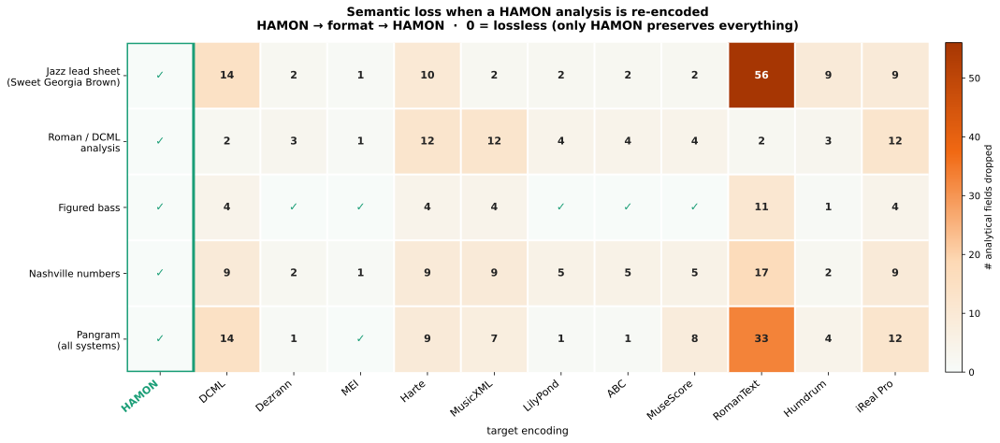
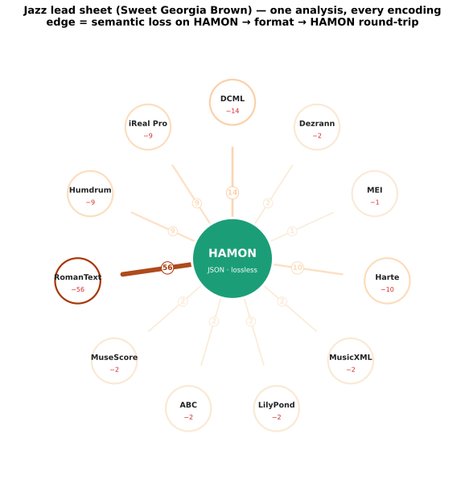

Bridging harmonic representations through a multi-modal encoding
Presented at
ICCCM 2026
Each example is authored in HAMON, exported to every encoding and re-imported. The xencoding report splits genuine semantic loss from expected notational re-spelling. Only HAMON is lossless everywhere.
How to read this page. Everything that is HAMON — the surface, the per-format
exports and the loss numbers (xencoding) — is text, computed directly by the Python
reference
hamonpy (HAMON → format → HAMON). It never passes through a
renderer. The engraved score is illustrative only: music21 realizes the harmony
into pitches and Verovio (loaded from CDN) paints it, purely for visual reference. When a
score can't be realized/rendered it is simply omitted — that is a display limitation, not a
HAMON loss, and it does not affect any measurement here.


Interactive loss viewer
Pick an example and a target encoding. The middle panel is the export; the right
panel lists what the round-trip HAMON → format → HAMON loses. Hover a
semantic loss to highlight its trace in the panels.